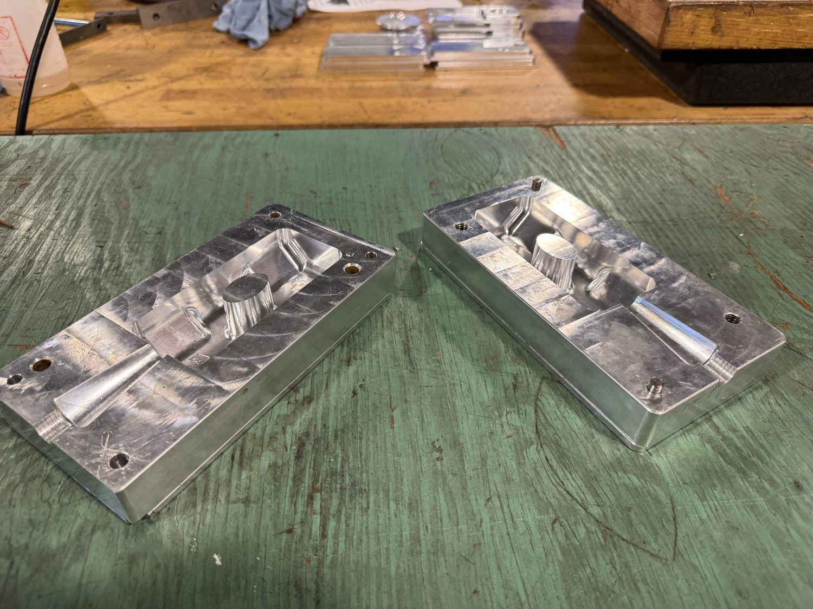

Timeline
Project Development
I programmed 3D CNC mill toolpaths for a hammer mold that will be used by Cal Poly students in net shape manufacturing coursework. The part needs mold-quality surfaces while staying within the machine and controller constraints available for the project. The main engineering challenge was optimizing the toolpaths and G-code so the program could run on a HAAS TM-2 controller with limited memory while also reducing total cycle time. The available media now documents the tooling, foam mold details, and early casting outcomes for the process.

-
Project start
Defined Class Tooling Requirement
Identified the need for a CNC-machined hammer mold for future net shape manufacturing coursework.
- Reviewed mold quality requirements.
- Considered DFM needs for student use.
- Defined the CNC machining approach.
-
CAM phase
Programmed 3D Toolpaths
Created advanced 3D milling toolpaths for the hammer mold geometry.
- Built toolpath strategy for mold surfaces.
- Balanced finish quality with run time.
- Prepared program for HAAS controller limits.
-
Current phase
Optimized for Controller Limits
Reduced and organized G-code to address HAAS TM-2 memory constraints.
- Worked around controller memory size.
- Optimized total cycle time.
- Prepared for first prototype run.
-
Tooling result
Machined Hammer Mold Tooling
Documented the machined hammer mold and material-removal results after the CAM strategy was applied.
- Machined mold geometry is now represented with finished tooling media.
- Material-removal image documents the machining outcome.
- Dimensional verification and class-use readiness are still TBD.
-
Casting result
Documented Early Casting Results
Captured early casting results from the hammer mold process for follow-up validation and process refinement.
- Casting images show multiple result views.
- Useful for future notes about mold performance and defect reduction.
- Final dimensional verification and class-use readiness are still TBD.